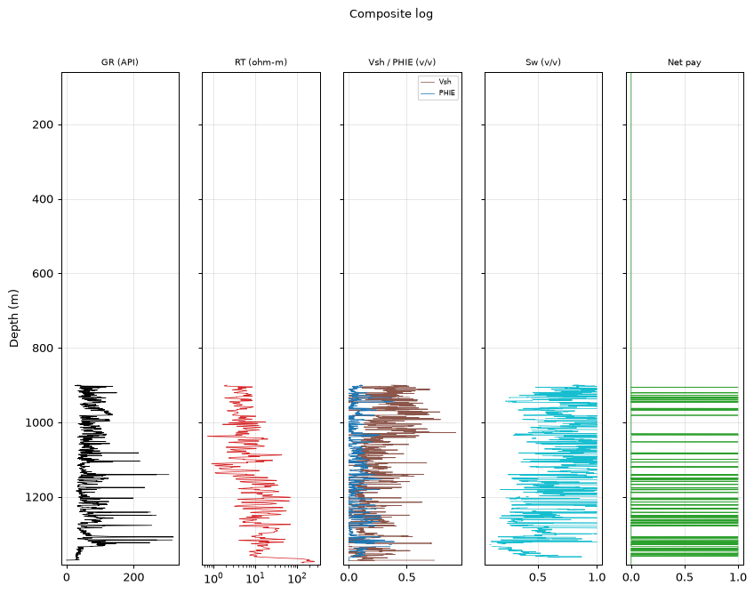
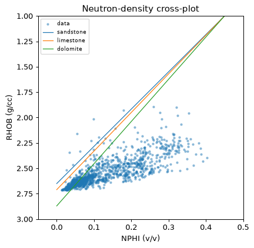

la narrativa petrofísicathe petrophysical narrative
¿Puede una IA leer la formación?Can an AI read the formation?
Ocho versiones de agentes interpretando los mismos pozos de Kansas,
medidos contra la línea base de un analista experto (declaradamente contaminado). Esto es lo
que la roca dice de ellos — y lo que ellos dicen de tu trabajo.Eight agent versions interpreting the same Kansas wells, measured
against an expert analyst's baseline (declared contaminated). This is what the rock says
about them — and what they say about your job.
El campo y el problema realThe field and the real problem
Schaben (Ness County, Kansas): carbonato Mississippiano apretado con pay
delgado y apilado en el bloque consolidado profundo (~900–1350 m). El tramo somero — dos
tercios de la columna registrada — lee RHOB de ~1.75 g/cc: roca no consolidada y lavada donde
la "porosidad" calculada es una ficción de esponja. Cualquier analista lo recorta antes de
calcular nada.Schaben (Ness County, Kansas): tight Mississippian carbonate with thin,
stacked pay in the deep consolidated block (~900–1350 m). The shallow section — two thirds of
the logged column — reads ~1.75 g/cc RHOB: unconsolidated, washed-out rock where computed
"porosity" is sponge fiction. Any analyst cuts it before computing anything.
Por qué elegimos ESTE campo: una trampa a propósitoWhy we chose THIS field: a deliberate trap
Schaben engaña al lector principiante — y esa es exactamente su virtud
como banco de pruebas. Dos tercios de la columna muestran "porosidades" espectaculares
(0.35–0.40) que un novato leería como cientos de metros de net pay; el pay real es delgado
(2–13 m), está apilado en el bloque profundo y solo aparece si primero se elige bien el
intervalo. Eso convierte al campo en un filtro perfecto: no se puede aprobar calculando
bien — solo se aprueba analizando bien. Aplicar las fórmulas perfectamente sobre la
columna completa da la respuesta perfecta a la pregunta equivocada. Ventajas adicionales:
la respuesta correcta es verificable con geología pública (KGS documenta que el Mississippiano
profundo es lo que produce — cualquiera puede buscar los API en su base de datos); mezcla
registros modernos (25 pozos clase A) y vintage (46 clase B) para probar el manejo de datos
imperfectos; y todo el dataset es público y reproducible. Si un modelo converge aquí, es
señal de criterio, no de suerte.Schaben deceives the beginner reader — and that is precisely its virtue
as a test bench. Two thirds of the column shows spectacular "porosities" (0.35–0.40) that a
novice would read as hundreds of meters of net pay; the real pay is thin (2–13 m), stacked
in the deep block, and only appears if you first choose the interval correctly. That makes
the field a perfect filter: you cannot pass by computing well — only by analyzing
well. Applying the formulas perfectly to the full column yields the perfect answer to
the wrong question. Further advantages: the correct answer is verifiable against public
geology (KGS documents that the deep Mississippian is what produces — anyone can look up the
API numbers in its database); it mixes modern logs (25 class-A wells) and vintage ones (46
class-B) to test handling of imperfect data; and the whole dataset is public and
reproducible. If a model converges here, it's signal, not luck.
Durante diez versiones, NINGÚN agente lo recortó: promediaban la columna
completa, la porosidad promedio salía 0.35–0.40, el net pay salía de 200–470 m — y el sistema,
honesto, abstenía en cada portada ("PHIE > 0.25: implausible para carbonato"). El problema
no era de fórmulas: era de criterio de intervalo.For ten versions, NO agent cut it: they averaged the full column, mean
porosity came out 0.35–0.40, net pay came out 200–470 m — and the system, honestly, abstained
on every front page ("PHIE > 0.25: implausible for carbonate"). The problem wasn't the
formulas: it was interval judgment.

Cómo leer un registro compuesto (pozo API 15-135-24881, del informe del
summit): cada pista es una curva contra la profundidad — GR (arcillosidad), resistividad,
Vsh/PHIE, Sw y net pay. ¿Notas que las curvas empiezan cerca de 900 m? No falta dato:
esa es la decisión, dibujada — el analista excluyó el tramo somero no consolidado y
el informe solo evalúa la formación real (900–1382.6 m). La columna completa, con la
densidad de esponja del tramo excluido, se ve en el panel siguiente.How to read a composite log (well API 15-135-24881, from the summit
report): each track is a curve against depth — GR (shaliness), resistivity, Vsh/PHIE, Sw
and net pay. Notice the curves start near 900 m? No data is missing: that is the
decision, drawn — the analyst excluded the shallow unconsolidated section, so the
report only evaluates the real formation (900–1382.6 m). The full column, with the
excluded section's sponge density, is in the next panel.
Por qué PHIE 0.31 «imposible» no era un bug. Los dos tercios someros del pozo leen densidad de esponja (p50 1.74–1.77 g/cc): promediarlos infla la porosidad a ficción. Cuando el agente decide analizar solo la roca real, el MISMO motor con la MISMA aritmética da 0.069 y 31 m de pay. La respuesta honesta fue darle la observación y la acción — recortar es criterio medido, jamás una regla escrita por nosotros.Why the “impossible” PHIE 0.31 wasn't a bug. The shallow two thirds of the well read sponge density (p50 1.74–1.77 g/cc): averaging them inflates porosity into fiction. When the agent decides to analyze only the real rock, the SAME engine with the SAME arithmetic yields 0.069 and 31 m of pay. The honest answer was to give it the observation and the action — cutting is measured judgment, never a rule we wrote.
la decisión madrethe master decision
La decisión que separa niveles: el intervaloThe decision that separates levels: the interval
Medimos cada ventana elegida por cada agente contra la ventana productora
del summit EN EL MISMO POZO: precisión = qué fracción de su ventana es roca productora;
cobertura = cuánto de la ventana correcta capturan. El resultado final:We measured every window each agent chose against the summit's producing
window ON THE SAME WELL: precision = what fraction of their window is producing rock;
recall = how much of the correct window they capture. The final result:
Analista (config final)Analyst (final config)
Zonas con tope ≥700 mZones with top ≥700 m
Precisión medianaMedian precision
PHIE ≤ 0.25
opus-4.8 + thinking
4/4
1.00
4/4
glm-5.2 + thinking
3/4
0.69
4/4
nemotron-ultra free + thinking
3/3
0.67
2/3
qwen3-max-thinking
2/3 (final 1176–1350 m)
0.62
2/4
gpt-5 (su mejor: v13)
2/4
0.77 → 0.00 (+think)
1
nemotron-super (±thinking)
0 en ~16 pozos
0.38
1–2
El pozo que todos fallanThe well everyone fails
15-135-24881 tiene la sección somera más engañosa del set. Todos los
agentes se quedaron arriba (topes 184–480 m)… hasta opus: 1150–1350 m, pay 13.0 m, PHIE
0.146, convergencia legítima — dentro de mi ventana de 900–1382.6 y más apretada.
El informe está publicado íntegro, junto al
mío del mismo pozo.15-135-24881 has the most deceptive shallow section in the set. Every
agent stayed shallow (tops 184–480 m)… until opus: 1150–1350 m, 13.0 m pay, PHIE 0.146,
legitimate convergence — inside my 900–1382.6 window and tighter.
Its full report is published, next to
mine on the same well.
Mano a mano en el mismo pozo. Todas las configs analizaron el
15-135-24881; la banda ámbar es la ventana del summit y el número a la derecha es la
precisión (fracción de la barra dentro de la banda). Lectura por modelo: opus aprieta
DENTRO de la banda (1.00); ultra va profundo pero arranca 200 m somero (0.68);
qwen-think cruza al bloque pero arrastra esponja desde 600 m (0.62); glm no
recortó en este pozo (0.40) — su mejor fue el 15-135-25990 con 0.79; super toma casi
toda la columna: recorta overburden, no selecciona (0.38); gpt-5 se quedó en la
esponja (0.00) — aunque en su mejor pozo (15-135-25399) clavó 1040–1300 con 1.00 vía
reintento. Datos verificados contra los ledgers finales.Hand-to-hand on the same well. Every config analyzed
15-135-24881; the amber band is the summit window and the number on the right is precision
(fraction of the bar inside the band). Per-model read: opus tightens INSIDE the band
(1.00); ultra goes deep but starts 200 m shallow (0.68); qwen-think crosses
into the block but drags sponge from 600 m (0.62); glm didn't cut on this well
(0.40) — its best was 15-135-25990 at 0.79; super takes almost the whole column:
trims overburden, doesn't select (0.38); gpt-5 stayed in the sponge (0.00) — though
on its best well (15-135-25399) it nailed 1040–1300 at 1.00 via the retry. Data verified
against the final ledgers.
El leaderboard en una barra. A diferencia del gráfico anterior (un solo pozo), aquí cada config se mide en TODO su batch: por cada pozo, qué fracción de su ventana cae dentro de MI ventana en ese mismo pozo; la barra es la mediana (verificada ledger a ledger). opus 1.00 con su banda de verificación (0.68–1.00 al perturbar la vara ±100 m) — nunca se solapa con el pelotón. Y el par gpt-5: 0.77 con su reasoning por defecto, 0.00 al forzarle thinking explícito.The leaderboard in one bar. Unlike the chart above (a single well), here each config is measured across its WHOLE batch: for every well, what fraction of its window falls inside MY window on that same well; the bar is the median (verified ledger by ledger). opus 1.00 with its verification band (0.68–1.00 under ±100 m yardstick perturbation) — never overlapping the pack. And the gpt-5 pair: 0.77 with default reasoning, 0.00 when explicit thinking is forced.
lo que dio la rocawhat the rock gave
Resultados de rocaRock results
Porosidad físicamente creíble: los mejores agentes cerraron con
PHIE de pay entre 0.146 y 0.208 — bajo el umbral de implausibilidad que definió diez
versiones de abstenciones.Physically credible porosity: the best agents closed with
net-pay PHIE between 0.146 and 0.208 — under the implausibility threshold that defined ten
versions of abstentions.
Pays en el orden de magnitud real: 2–13 m en ventanas
apretadas (vs los 200–470 m de ficción inicial). Mis pays clase-A: P50 de campo 22–36 m
sobre ventanas más anchas.Pays in the real order of magnitude: 2–13 m over tight windows
(vs the initial 200–470 m fiction). My class-A pays: field P50 of 22–36 m over wider
windows.
Las abstenciones restantes son CORRECTAS: sin calibración de
núcleo ni Rw medido, un ingeniero riguroso también entrega rangos con reservas. El techo que
queda es de datos, no de análisis.The remaining abstentions are CORRECT: with no core calibration
and no measured Rw, a rigorous engineer also delivers ranges with reservations. The
remaining ceiling is data, not analysis.
Cuidado con el "cero estéril": gpt-5 acumuló 4 pozos que
"convergen" eligiendo zonas sin nada — sin pay no hay nada que objetar. El gate se comporta;
el modelo lo lee como éxito. Un revisor humano lo detecta en un vistazo al pay.Beware the "sterile zero": gpt-5 accumulated 4 wells that
"converge" by picking barren zones — with no pay there's nothing to object to. The gate
behaves; the model reads it as success. A human reviewer catches it at a glance at the
pay.
evidencia independienteindependent evidence
La evidencia que solo el summit integróThe evidence only the summit integrated
La incertidumbre dominante de Archie aquí es Rw (default regional 0.04,
sin catálogo de aguas). El summit la atacó con el SP: baseline de shale corregida por deriva,
SSP legible en 38/38 pozos clase-A, cadena Bateman-Konen con RMF de offset (asunción
cross-well DECLARADA) → banda Rw = 0.041–0.054 ohm·m. Una medición independiente que
confirma el default — y que parametrizó el rango del Monte Carlo con trazabilidad registrada.
Sumó además el índice de hidrocarburo móvil (Rxo/Rt): mediana 0.597 en 24,881 — indicación de
móvil que ninguna curva individual muestra.Archie's dominant uncertainty here is Rw (regional default 0.04, no
water catalog). The summit attacked it through the SP: drift-corrected shale baseline, SSP
readable in 38/38 class-A wells, Bateman-Konen chain with offset RMF (a DECLARED cross-well
assumption) → Rw band = 0.041–0.054 ohm·m. An independent measurement confirming the
default — and it parameterized the Monte-Carlo range with recorded provenance. It added the
movable-hydrocarbon index (Rxo/Rt): median 0.597 on 24,881 — a mobility indication no single
curve shows.

Cómo leer un crossplot densidad-neutrón: cada punto es una
profundidad; su posición respecto a las líneas de matriz (arenisca/caliza/dolomita) dice qué
roca es y cuánta porosidad tiene. La nube de este pozo cae en el dominio carbonatado — la
evidencia con la que el summit sostuvo la litología dolomítica sin verla en núcleo.How to read a density-neutron crossplot: each dot is one depth;
its position against the matrix lines (sandstone/limestone/dolomite) tells you the rock and
its porosity. This well's cloud falls in the carbonate domain — the evidence the summit used
to support dolomitic lithology without core.taxonomía de fallasfailure taxonomy
Dónde fallan como analistasWhere they fail as analysts
Zona somera — leen "porosidad alta = interesante" en vez de
"consolidación = evaluable". La falla madre; persiste en los modelos sin juicio de roca.Shallow zoning — they read "high porosity = interesting" instead
of "consolidation = evaluable". The mother failure; persists in models without rock
judgment.
Argumentación rasa — eligen Larionov y lo justifican con "dio
una tendencia más suave". Nadie menciona sistema de lodo, era de la herramienta ni modelo
litológico. Deciden como junior bueno; defienden como practicante.Thin argumentation — they pick Larionov and justify it with "it
gave a smoother trend". Nobody mentions mud system, tool era or lithology model. They decide
like a good junior; they defend like an intern.
No calibran — la banda SP→Rw estaba servida; ninguno la usó
para cuestionar el default. La calibración de parámetros con datos duros quedó en cero en
todos los modelos.They don't calibrate — the SP→Rw band was served; none used it
to challenge the default. Parameter calibration with hard data scored zero across all
models.
Anclaje — con memoria entre pozos, un modelo repitió una
ventana dígito a dígito en pozos distintos. Aquí cayó en roca correcta; en un campo
heterogéneo sería un sesgo peligroso.Anchoring — with cross-well memory, one model repeated a window
digit-for-digit on different wells. Here it landed on correct rock; in a heterogeneous field
it would be a dangerous bias.
Sin ojo de campo — 4 pozos por batch y ninguna correlación
entre ellos. La síntesis de campo (72 pozos en dos clases, mapa, estadística cross-well,
capítulo vintage) siguió siendo exclusiva del summit.No field eye — 4 wells per batch and no correlation between
them. Field synthesis (72 wells in two classes, map, cross-well statistics, vintage
chapter) remained exclusive to the summit.
el veredictothe verdict
Junior o senior: la calibración finalJunior or senior: the final calibration
CompetenciaCompetency
Quién la tieneWho owns it
NivelLevel
QC de curvas, unidades, badholeCurve QC, units, badhole
el motor (determinista)the engine (deterministic)
senior mecánicomechanical senior
Zonar el reservorioZoning the reservoir
el agente (los capaces)the agent (the capable ones)
junior→mid
Elegir y defender métodosChoosing and defending methods
el agentethe agent
junior altohigh junior
Calibrar Rw/m/n con datosCalibrating Rw/m/n with data
nadienobody
—
Incertidumbre y abstenciónUncertainty and abstention
el motor (gates)the engine (gates)
del sistemathe system's
Síntesis de campo, economía, firmaField synthesis, economics, sign-off
el humanothe human
senior
La lección para tu carrera es la misma del veredicto del hub, ahora con
números: no te reemplazan; te multiplican. El trabajo junior — zonar, elegir métodos,
redactar con trazabilidad total — llega hecho y auditado. Lo que este experimento midió como
escaso, en 8 versiones y ~60 informes, es exactamente lo que un senior aporta: calibrar con
datos duros, correlacionar el campo, argumentar la evidencia, y decidir qué significa
económicamente. Ese asiento sigue siendo tuyo.The career lesson is the hub verdict's, now with numbers: they don't
replace you; they multiply you. The junior work — zoning, method selection, fully
traceable write-ups — arrives done and audited. What this experiment measured as scarce,
across 8 versions and ~60 reports, is exactly what a senior brings: calibrating with hard
data, correlating the field, arguing the evidence, and deciding what it means economically.
That seat is still yours.